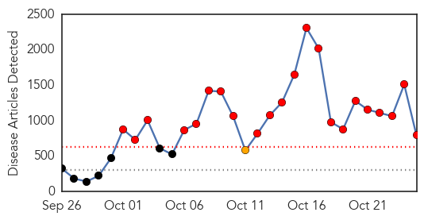
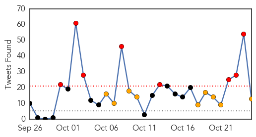

Ebola
30-Day Web Trend
22 alerts, 1 warnings

30-Day Twitter Trend
18 alerts, 6 warnings

Article Locations
Article Confidences
Top Articles:
- 1.000
- Fear Ebola? You should worry about the flu instead
- 1.000
- WHO: Number of Ebola-linked cases passes 10,000
- 1.000
- New York, New Jersey order tough Ebola quarantine rules
- 1.000
- Volunteer doctors protect us from Ebola
- 1.000
- Ebola Death Toll Nears 5,000 as Virus Advances
- 1.000
- Nurse quarantined over Ebola calls treatment 'frenzy of disorganization'
- 1.000
- NJ, NY announce new Ebola quarantine policy
- 1.000
- Is Riverside County ready for Ebola?
- 1.000
- Airborne Transmission of Ebola Highly Unlikely, Experts Say
- 1.000
- Nurse quarantined over Ebola calls treatment 'frenzy of disorganization'
- 1.000
- Ebola scare hits Miss Earth pageant
- 1.000
- Radnor police will be prepared for unlikely Ebola outbreak
- 1.000
- Panic, not Ebola, is biggest enemy, civic and health leaders say
- 1.000
- WHO Says The Outbreak Has Exceeded 10,000 Cases
- 1.000
- WHO eyes mass Ebola vaccines by mid-2015
- 1.000
- Ebola vaccine plans to be speeded up for 2015
- 1.000
- WHO releases Ebola figures
- 1.000
- Dallas nurse Nina Pham cleared of Ebola virus, released from hospital
- 1.000
- WHO eyes mass Ebola vaccines by mid-2015 - Emirates 24
- 1.000
- World steps up anti-Ebola effort after Mali’s first patient dies
- 1.000
- Nurse quarantined over Ebola calls treatment 'frenzy of disorganization'
- 1.000
- WHO: Number of Ebola-linked cases passes 10,000
- 1.000
- WHO says number of Ebola cases has passed 10,000
- 1.000
- Nurse quarantined over Ebola calls treatment 'frenzy of disorganization'
- 1.000
- Ebola outbreak: Get up to speed with the latest
- 1.000
- Ebola Medical Worker Undergoes 21-Day Quarantine in New Jersey : World : Chinatopix
- 1.000
- Ebola Spreads To Mali, WHO Sends Experts To Control Possible Outbreak
- 1.000
- Ebola Death Toll Nears 5,000 as Virus Advances
- 1.000
- Obama: Science, not fear, key to Ebola response
- 1.000
- Ebola: More calls for travel bans or quarantines
- 1.000
- iafrica.com WHO eyes Ebola vaccine by mid-2015
- 1.000
- Two US states order tough Ebola quarantine rules
- 1.000
- No need to isolate staff treating Ebola
- 1.000
- Anti-Ebola process gets boost
- 1.000
- WHO Sees Mass Ebola Vaccine Rollout By Mid Next Year
- 1.000
- Ebola outbreak: Get up to speed with the latest developments
- 1.000
- Tougher Measures, Army Deployment Needed to Contain Ebola Virus in Africa
- 1.000
- Ebola outbreak: Get up to speed with the latest
- 1.000
- Yale researchers say West African Ebola will explode
- 1.000
- Ebola: More calls for travel bans or quarantines
- 1.000
- Ebola infections cross the 10,000 mark, UN health agency says
- 1.000
- 5-year-old at Bellevue leaving isolation
- 1.000
- 5-year-old at Bellevue leaving isolation
- 1.000
- 5-year-old at Bellevue leaving isolation
- 1.000
- 5-year-old at Bellevue leaving isolation
- 1.000
- 5-year-old at Bellevue leaving isolation
- 1.000
- 5-year-old at Bellevue leaving isolation
- 1.000
- 5-year-old at Bellevue leaving isolation
- 1.000
- 5-year-old at Bellevue leaving isolation
- 1.000
- 5-year-old at Bellevue leaving isolation
Showing top 50 articles...
Top Tweets:
- 0.946
- Doctors, nurses & healthcare workers volunteering to combat the Ebola epidemic in West Africa are heroes.
- 0.916
- No. There is no vaccine for Ebola. Read more about experimental treatments/vaccines: http://t.co/Q80wluP2h0
- 0.882
- A person infected with Ebola virus is not contagious until symptoms appear. http://t.co/51O4bHlYTU
- 0.853
- Air, food & water do not carry Ebola virus, but body fluid droplets can. New CDC Fact Sheet: http://t.co/v1TaKNId23
- 0.847
- Can mosquitoes, who transmit numerous disease worldwide, infect people with Ebola? http://t.co/fjppkMC3yB
- 0.837
- RT: EBOLA : elles dansent pour lutter contre le virus ShakeEbolaOff http://t.co/kzmIYwk8Of
- 0.817
- RT: Air, food & water do not carry Ebola virus, but body fluid droplets can. New CDC Fact Sheet: http://t.co/v1TaKNId23
- 0.804
- No. There is no vaccine for Ebola. Read more about the experimental treatments: http://t.co/Q80wluP2h0
- 0.802
- Must protect health, safety, & well-being of returning health workers & continue to protect Americans so Ebola does not spread here.
- 0.797
- Answers to common questions about Ebola. Our next EbolaFact: Ebola is not airborne. http://t.co/ApXTJyYYNV
- 0.797
- There is no evidence that mosquitoes or other insects can transmit Ebola virus. http://t.co/bmdet0XF6A
- 0.792
- AFD blog `NYC Health: Ebola Patient Timeline' http://t.co/YiJBCYlbny
- 0.789
- There is no FDA-approved vaccine for Ebola. @NIH & @DeptofDefense have both begun human testing on investigational vaccines.
- 0.765
- Now available: free HumanitarianData tables for the Ebola outbreak http://t.co/ADyXLF9697 opendata ebolaresponse via
- 0.756
- RT: EBOLA : elles dansent pour lutter contre le virus ShakeEbolaOff: http://t.co/MowyTKIyDt via
- 0.753
- RT: Answers to common questions about Ebola. Our next EbolaFact: Ebola is not airborne. http://t.co/ApXTJyYYNV
- 0.738
- Two Ebola Nurses free of virus http://t.co/JTPFnqXOr4
- 0.672
- RT: Truth. “@nickbilton: There are more experts on CNN right now talking about Ebola in US than people with ebola in US. http:…
- 0.612
- Ebola: West African Travelers to enter US only through 5 Airports... http://t.co/Jny1iLI4CR
- 0.597
- Two U.S. states to quarantine health workers returning from Ebola zones http://t.co/W5WQfJ24mC
- 0.584
- Tested Negative for Ebola, Nurse Questions Her Quarantine http://t.co/AJ557r0qkQ
- 0.556
- RT: FDA authorized emergency use of two BioFire Defense diagnostic tests to detect the Ebola Zaire virus in individuals. http://t.c…
- 0.546
- more on this week's Ebola vaccine summit from the dynamic duo, @sciencecohen & @kakape. http://t.co/ECTuWNjQGl
Unknown
30-Day Web Trend
0 alerts, 0 warnings

30-Day Twitter Trend
3 alerts, 0 warnings

Article Locations

Article Confidences

Top Articles:
- 0.966
- Turkey MERS case reported
- 0.964
- In wake of student’s death, Metro warns parents about respiratory virus
- 0.962
- Vaccinations could lead to the end of shingles
- 0.952
- Health officials probing death of Tennessee student for possible enterovirus
- 0.917
- Chicago Tribune
- 0.917
- Chicago Tribune
- 0.917
- Chicago Tribune
- 0.886
- Last Chance: Free Flu Vaccine Clinics Next Week
- 0.866
- Five injured in Sarnia, Ontario industrial explosion- CBC
- 0.866
- Many injured in Ontario industrial explosion
- 0.866
- Iraq government forces, militias take control of strategic town
- 0.819
- IMA supports voluntary flu shots for physicians
- 0.807
- Kenya : Research launched to record breast cancer statistics
- 0.799
- Studies Link Cold Sore Virus to Alzheimer's Risk – WebMD
- 0.744
- Common Cold Sores Two-folds Risk of Alzheimer’s Disease, Two New Studies Revealed
- 0.699
- Many land up in hospital
- 0.640
- RU-486 Morbidity and Mortality
- 0.589
- 40,000 children die of diarrhoea, pneumonia annually
- 0.583
- Hospitals vary in their readiness for Ebola cases
- 0.544
- 'Many Exposed' To Ebola Infected Mali Girl
- 0.509
- Probe into man's death at hospital gate
Top Tweets:
-
No tweets found for Oct 25, 2014